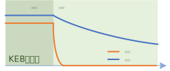
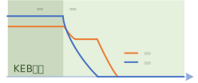
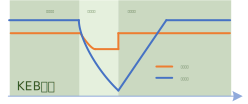

变频器KEB功能
创建于2021-9-25
该项目完成于2021-6，原创
该项目完成于2021-6，原创
当电机工作在电动状态时，如果在运行中突然失电，变频器母线电容的电压会很快下降，当触发欠压保护时，变频器会停止工作，从而失去对电机的控制，电机只能依靠自身摩擦力或其它机械方式减速至零。如果欠压停机之后，又很快恢复供电，此时变频器就需要依靠飞车启动功能搜索电机转速，然后在此基础上重新启动。
如果能够在失电时，能够设法维持母线电压在一定值，并且保持一段时间，这段时间内变频器就可以正常工作，从而可以使电机受控地降至零速，如果在过程中供电恢复，由于变频器并未停止工作，电机的运行状态是已知的，因此很容易就可以调整到失电之前的正常运行状态。KEB（Kinetic Energy Back-up，动能支援）功能，正是为了满足上述要求而产生的。



当KEB功能使能后，如果检测到失电，变频器就会控制电机减速，将电机的机械能转换为电能，从而给母线电容充电，使母线电压可以维持在欠压值以上，避免变频器停机。常用的方法通过调整电机的减速斜率使母线电压维持在设定值附近，这种方法在实际应用时存在参数选择困难，而且母线电压的控制效果也不佳，可能会出现母线电压波动的情况。为解决这个问题，特设计了一种新的母线电压控制方法，使用新的方法，参数调整更加容易，而且母线电压控制效果更好，母线电压波动的情况得以避免。该方法已经在实际应用中得到了验证。